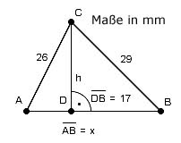

Pythagoras Aufgabe 9 Berechnen Sie x in mm.

Satz von Pythagoras im Dreieck DBC: BC2 = h2 + DB2 |-DB2 h2 = BC2 - DB2 h2 = 292 mm2 - 172 mm2 = 552 mm2 |√ h = = 23,5 mm Satz von Pythagoras im Dreieck ADB: AC2 = AD2 + h2 | -h2 AD2 = AC2 - h2 AD2 = 262 mm2 - 23,52 mm2 = 123,8 mm2 |√ AD = = 11,1 mm x = 17 mm + 11,1 mm = 28,1 mm x = 28,1 mm